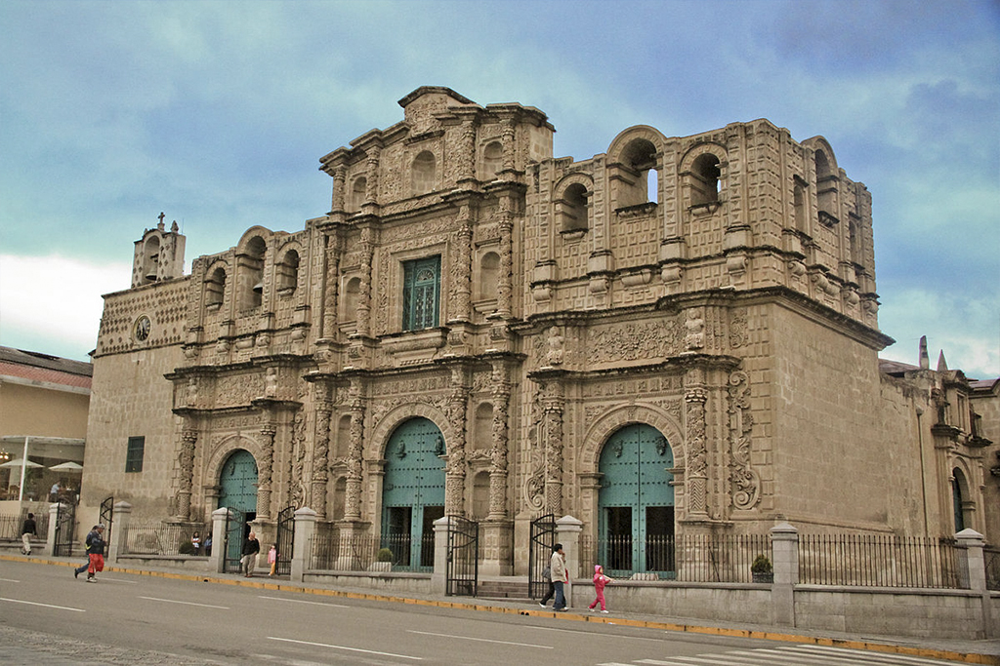
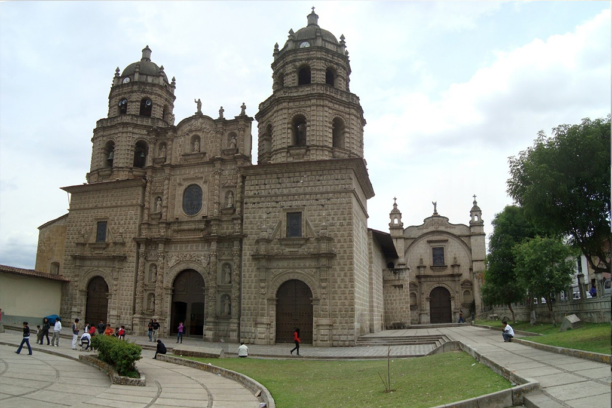
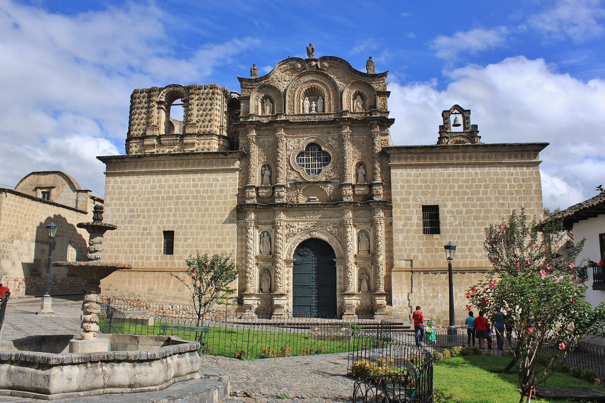
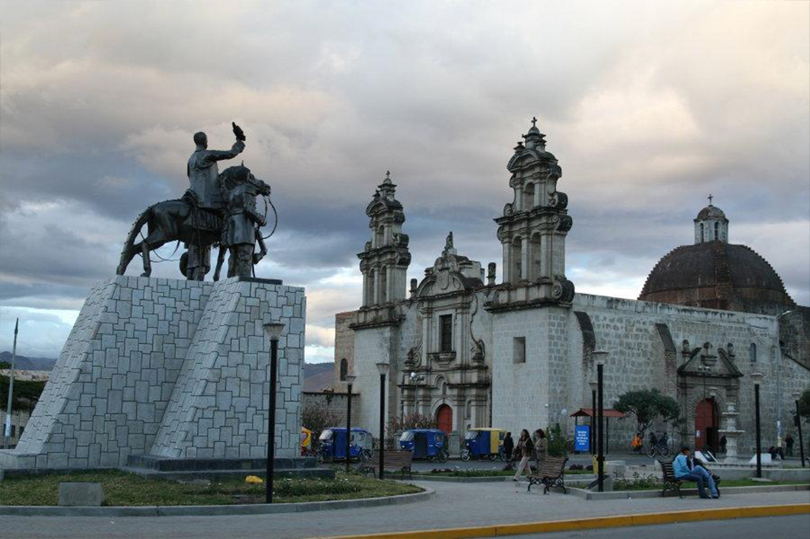
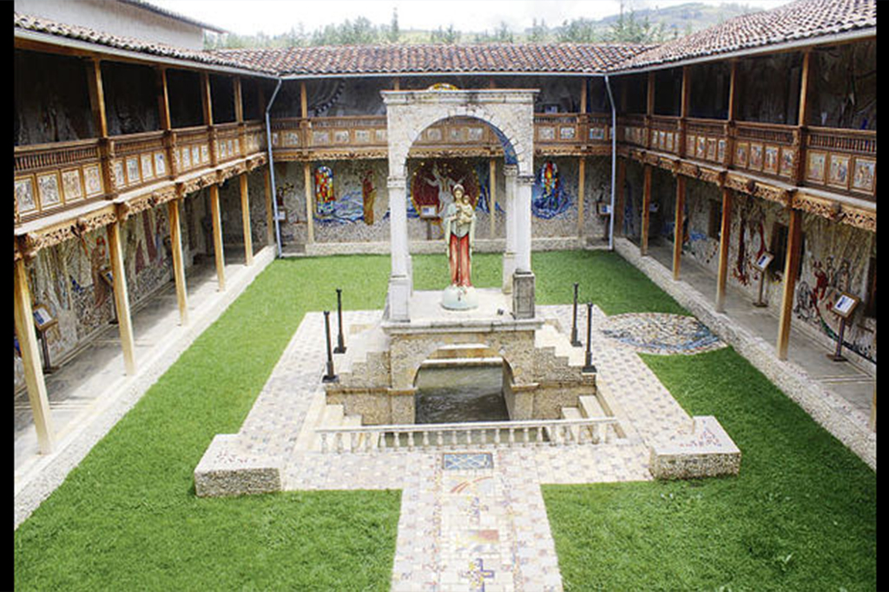

Llamada también Iglesia Matriz Santa Catalina. Fue La Real Cédula del 26 de diciembre de 1665 que ordenó establecer una parroquia de españoles en esta ciudad, edificándose en la antigua Casa de Justicia. En 1682 el templo de Santa Catalina sería elevado a la categoría de Catedral.
Luce una hermosa fachada de piedra labrada de origen volcánico correspondiente al plateresco. Combinando armoniosamente columnas, cornisas y hornacinas, todas finamente talladas, es una de las muestras más destacadas del estilo barroco peruano. Tiene cinco campanas distribuidas por torres laterales que están a medio construir. En su interior son de gran atracción las naves con imágenes de la Virgen del Carmen, Santa Rosa de Lima y San Martín de Porres, destacándose el altar mayor y el púlpito policromado, tallados en madera y recubiertos en totalmente con pan de oro, encontrándose también muebles y pinturas muy valiosas.
Llamada inicialmente San Antonio, esta iglesia es de la orden franciscana. Es uno de los primeros templos construidos por los españoles y se ubica frente a la Plaza de Armas.
Construida en el año 1699 con piedras labradas y con piedras del cerro Santa Apolonia, su estilo es barroco plateresco y su hermosa fachada es de piedra tallada. Se destaca en su interior los altares con bellas imágenes. En 1952 descubrieron bajo el altar mayor, unas catacumbas en los cuales yacían los restos de miembros de la orden franciscana y de la nobleza indígena. Cuenta con un convento, con el Museo de Arte Religioso y con el Santuario de la Virgen Dolorosa, la imagen más venerada del pueblo.
Está iglesia se construyó con el aporte del corregidor Francisco de Espinoza. Los trabajos estuvieron dirigidos por el maestro José de Morales, quien terminó la iglesia en 1744. La fachada, está trabajada a modo de retablo, al igual que las otras iglesias de Cajamarca. Consta de 3 cuerpos y tiene hornacinas con diferentes esculturas. En la parte más alta, sobre una cornisa ondulada se pueden observar tres esculturas que representan las tres virtudes teologales.
La Iglesia la recoleta se encuentra ubicada en la intersección de la Avenida de Los Héroes con la Avenida El Maestro en el barrio de San Sebastián. Fue edificada en el siglo XVIII, la fachada de la Iglesia de la Recoleta es sobria tallada en piedra y remarcada por esbeltas espadañas en triple arco.
En la actualidad en esta Iglesia funciona el Colegio San Ramón y el Jardín de Niños Santa Teresita y la antigua Escuelita de Mujeres Belén. Se cuenta que, durante la invasión chilena a la ciudad de Cajamarca, los soldados trataron de ingresar a esta iglesia para saquearla, en ese mismo momento ocurrió un terremoto. Ese terremoto hizo que los chilenos salieran huyendo, salvándose las reliquias religiosas allí existentes.
El Santuario Virgen del Rosario en todo su esplendor. Paras su construcción se ha empleado granito fino. Contiene una serie de pasajes bíblicos.
